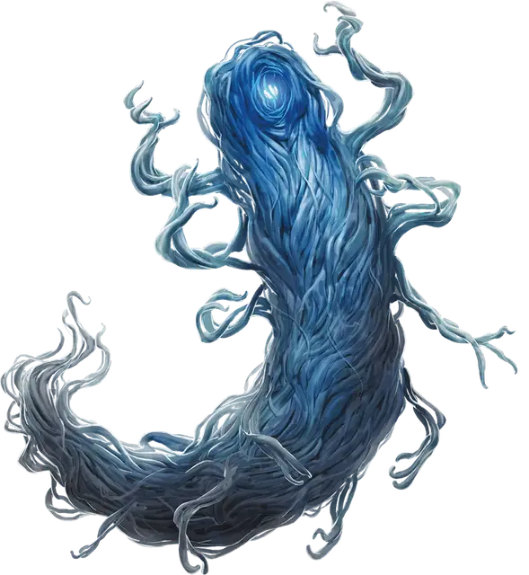

Хашалак куори
Hashalaq Quori
Средняя Аберрация, законно-злая

Класс Доспеха 17 (природный доспех)
Хиты 99 (18к8 + 18)
Скорость 40 футов
| мод | спас | ||
|---|---|---|---|
| СИЛ | 12 | +1 | +1 |
| ЛОВ | 14 | +2 | +2 |
| ТЕЛ | 13 | +1 | +1 |
| мод | спас | ||
|---|---|---|---|
| ИНТ | 18 | +4 | +4 |
| МДР | 16 | +3 | +7 |
| ХАР | 18 | +4 | +8 |
Навыки История +12, Магия +12, Проницательность +11, Убеждение +8
Сопротивление урону психическая энергия
Иммунитет к состояниям очарование, испуг
Чувства тёмное зрение 60 футов, пассивное Восприятие 13
Языки Общий, Куори
Опасность 9 (5000 опыта)
Бонус мастерства +4
Особенности
Врожденное колдовство. Базовой характеристикой куори является Интеллект (Сл спасброска от заклинания 16). Он может накладывать следующие заклинания, не нуждаясь в материальных компонентах:
• Неограниченно: очарование личности [charm person]
• 3/день каждое: обнаружение мыслей [detect thoughts], маскировка [disguise self], внушение [suggestion]
• 1/день каждое: подчинение личности [dominate person], вещий сон [dream]
Действия
Мультиатака. Куори дважды совершает атаку разума.
Мягкое прикосновение. Рукопашная атака заклинанием: +8 к попаданию, досягаемость 5 футов, одна цель. Попадание: 9 ( 1к10 +4) урона силовым полем. Если цель существо, то оно должно преуспеть в спасброске Мудрости Сл 16, иначе оно упадет ничком в приступе смеха.
Атака Разума. Куори выбирает видимое существо в пределах 60 футов от себя. Существо должно преуспеть в спасброске Мудрости Сл 16. Существо получает 18 (4к8) урона психической энергией. В случае успеха существо получает половину урона.
Одержимость (перезарядка 6). Один гуманоид, видимый куори в пределах 5 футов от себя, должен преуспеть в спасброске Харизмы Сл 16, иначе станет одержимым куори; после этого куори исчезает, а цель становится недееспособной и теряет контроль над своим телом. Теперь куори контролирует это тело, но цель не теряет сознание. Куори не может быть целью атак, заклинаний и прочих эффектов, оно сохраняет своё мировоззрение, Интеллект, Мудрость, Харизму и иммунитет к испугу и очарованию. Во всём остальном куори использует характеристики одержимой цели, но оно не получает доступ к знаниям, классовым умениям и владениям цели.
Одержимость длится до тех пор, пока хиты тела не опустятся до 0, пока куори не окончит его бонусным действием, или пока кури не заставят уйти таким эффектом как заклинание рассеивание зла и добра. Когда одержимость заканчивается, куори возвращается в свободное пространство в пределах 5 футов от тела. Цель получает на 24 часа иммунитет к Одержимости этого куори после того как преуспеет в спасброске или после того как одержимость закончится.
Реакции
Эмпатическая обратная связь. Если куори получает урон от существа, которое может видеть в пределах 60 футов от себя, то может заставить это существо преуспеть в спасброске Интеллекта Сл 16 или получить 11 (2к10) урона психической энергией .
Описание
Хашалак куори — хранители знаний и судьи. Обычно они известны как похитители снов. В своей естественной форме хашалаки состоят из сотен полупрозрачных усиков. Они могут управлять этими усиками, и тем самым придавать себе любую простую форму. Голубой свет внутри хашалаков является их сенсорным органом, который может перемещаться внутри хашалак в зависимости от текущей формы.
Сила удовольствия. Хашалак куори веками изучали свою смертную добычу. Вселение в человеческие тела, таких как Вдохновлёные, дало хашалакам глубокое понимание гедонических побуждений человечества. В результате они разработали несколько способов контроля гуманоидов через удовольствие- они даже придумали особый вкус для себя.
Ученые из Дал-Куора. Хашлак куори являются хранителями знаний Дал-Куора. Даже те хашалаки, которые не используют Вдохновленных как сосуды для себя, посвящают себя изучению Эберрона и других планов. Кроме того они являются немногими из куори, которые понимают пути магии. В Дал-Куор хашлак куори являются советниками калараков. Также они выступают в роли судей, охраняя куори и следя за тем, чтобы соперничество цукор никогда не угрожало планам Темной Сновидицы.
Дал-Куор — это план сновидений. В настоящее время в нем господствует темная сила, известная как Иль-Лаштавар или Дремлющая Тьма. Иль-Лаштавар служат множество аберраций, которые являются воплощениями снов и ночных кошмаров - куори. Поскольку очень сложно физическому телу перемещаться в Дал-Куор и из него, то в Эберроне чаще всего куори встречаются в теле своего хозяина, в которого вселились.
Чаще всего куори поселяются во Вдохновленных, которые были описаны ранее.